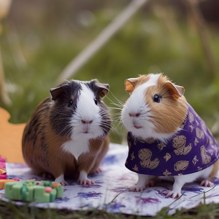

Social little companions for someone who enjoys gentle interaction and a regular routine.

01 / Meet the animal
Common types and appearance
Guinea pigs have rounded bodies, short legs and no obvious tail. Coat length and texture vary, but their social and dietary needs are similar.
Examples you may meet
American or short-haired: Short, smooth coat in many colours; grooming is fairly simple.
Abyssinian: Short coat with distinctive swirls called rosettes.
Peruvian: Long, flowing coat that needs frequent grooming to avoid matting.
These are examples, not a ranking of the best pets. Individuals can differ from typical descriptions.
02 / Food and water
What and how to feed
Provide unlimited good-quality hay and fresh water every day. Hay is essential for digestion and dental wear.
Give suitable guinea-pig pellets and daily vitamin-C-rich vegetables, such as appropriate leafy greens and bell pepper. Introduce new vegetables gradually.
Guinea pigs cannot make enough vitamin C themselves. Do not replace a proper diet with treats or vitamin drops in water; ask a vet about the right plan.
03 / Everyday life
A suitable home and daily care
Keep compatible guinea pigs together, with a spacious, secure floor-level home and room to exercise.
Provide several shelters and food spots so each animal can retreat and eat comfortably. Use safe, dry bedding and clean wet areas daily.
Protect them from heat, cold, predators and unsafe electrical cords during supervised floor time.
04 / Keep watching
Health and further reading
A guinea pig that stops eating, has fewer droppings, or seems quieter than usual needs prompt advice from a vet experienced with small mammals.
For more detailed care requirements, start with RSPCA pet care guides. Check species-specific needs with a qualified vet or rescue before bringing an animal home.